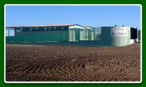

L'Azienda
Nasce ed opera nel settore ortofrutticolo dal 1985
prodotti ortofrutticoli, ortofrutticoli, agricoli, agricoltura
La società cooperativa "Gloria" nasce ed opera nel settore ortofrutticolo dal 1985.
L'attività dell'azienda è rivolta alla selezione, confezionamento e vendita
dei prodotti ortofrutticoli dei soci come: carciofi, broccoli, asparagi, ecc.

La società nel rispetto delle norme vigenti è senza finalità speculativa,
si propone, in via generale, di concorrere alla valorizzazione tecnico-economica delle produzioni
agricole, alla tutela del mercato di tali prodotti e allo sviluppo economico e sociale
dell'agricoltura unito a tutto ciò è supportato da un ampia offerta di prodotti
eccellenti ...
Attualmente la cooperativa vanta tanti produttori agricoli che operano su un estensione totale di circa
600 di ettari dai quali si ricavano : broccoli, carciofi, asparagi, ciliegie,
sedano e prezzemolo !!!
La società cooperativa "Gloria" ha fatto un ulteriore passo in avanti ottenendo il 5 Dicembre 2002 la certificazione
ISO 9001 su tutti i suoi prodotti ortofrutticoli !!!
Visita la pagina dedicata ai nostri Prodotti >>


){kind=link}
){kind=link}
){kind=link}
){kind=link}